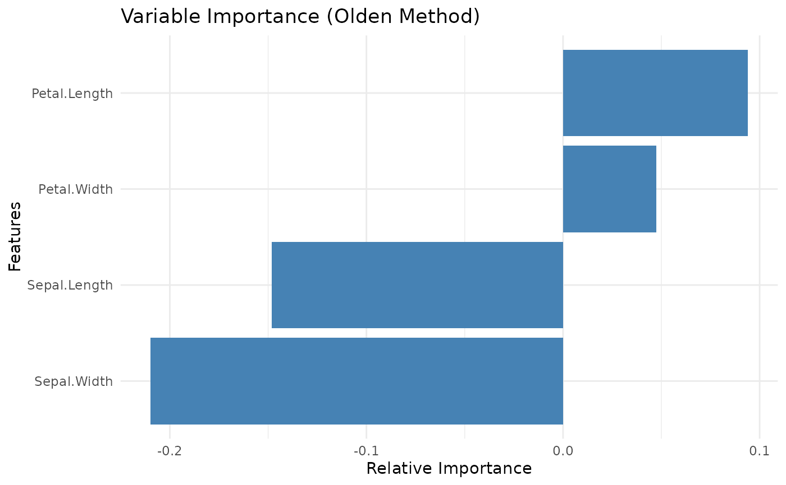
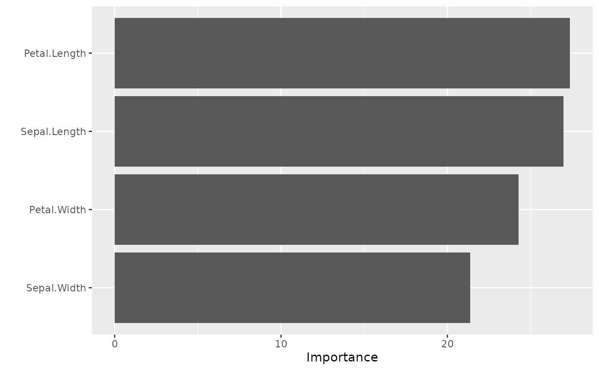

This file implements methods for variable importance generics from NeuralNetTools and vip packages.
Arguments
- mod_in
A fitted model object of class "ffnn_fit".
- bar_plot
Logical. Whether to plot variable importance (default TRUE).
- ...
Additional arguments passed to methods.
- object
A fitted model object of class "ffnn_fit".
- type
Type of algorithm to extract the variable importance. This must be one of the strings:
'olden'
'garson'
Value
A data frame for both "garson" and "olden" classes with columns:
- x_names
Character vector of predictor variable names
- y_names
Character string of response variable name
- rel_imp
Numeric vector of relative importance scores (percentage)
The data frame is sorted by importance in descending order.
A tibble with columns "Variable" and "Importance"
(via vip::vi() / vip::vi_model() only).
Garson's Algorithm for FFNN Models
{kindling} inherits NeuralNetTools::garson to extract the variable
importance from the fitted ffnn() model.
Olden's Algorithm for FFNN Models
{kindling} inherits NeuralNetTools::olden to extract the variable
importance from the fitted ffnn() model.
Variable Importance via {vip} Package
You can directly use vip::vi() and vip::vi_model() to extract the variable
importance from the fitted ffnn() model.
References
Beck, M.W. 2018. NeuralNetTools: Visualization and Analysis Tools for Neural Networks. Journal of Statistical Software. 85(11):1-20.
Garson, G.D. 1991. Interpreting neural network connection weights. Artificial Intelligence Expert. 6(4):46-51.
Goh, A.T.C. 1995. Back-propagation neural networks for modeling complex systems. Artificial Intelligence in Engineering. 9(3):143-151.
Olden, J.D., Jackson, D.A. 2002. Illuminating the 'black-box': a randomization approach for understanding variable contributions in artificial neural networks. Ecological Modelling. 154:135-150.
Olden, J.D., Joy, M.K., Death, R.G. 2004. An accurate comparison of methods for quantifying variable importance in artificial neural networks using simulated data. Ecological Modelling. 178:389-397.
Examples
# \donttest{
if (torch::torch_is_installed()) {
model_mlp = ffnn(
Species ~ .,
data = iris,
hidden_neurons = c(64, 32),
activations = "relu",
epochs = 100,
verbose = FALSE,
cache_weights = TRUE
)
# Directly use `NeuralNetTools::garson`
model_mlp |>
garson()
# Directly use `NeuralNetTools::olden`
model_mlp |>
olden()
} else {
message("Torch not fully installed — skipping example")
}

#> x_names y_names rel_imp
#> 1 Petal.Length y -0.09884371
#> 2 Sepal.Width y -0.08868219
#> 3 Petal.Width y 0.04322193
#> 4 Sepal.Length y 0.03929494
# }
# \donttest{
# kindling also supports `vip::vi()` / `vip::vi_model()`
if (torch::torch_is_installed()) {
model_mlp = ffnn(
Species ~ .,
data = iris,
hidden_neurons = c(64, 32),
activations = "relu",
epochs = 100,
verbose = FALSE,
cache_weights = TRUE
)
model_mlp |>
vip::vi(type = 'garson') |>
vip::vip()
} else {
message("Torch not fully installed — skipping example")
}

# }